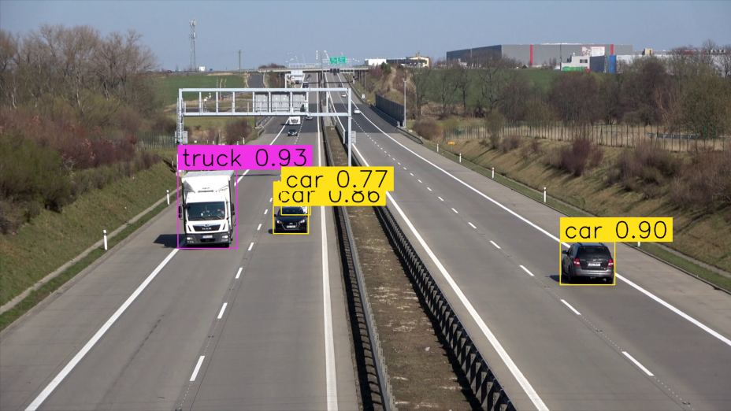

Nel progetto realizzato si vuole proporre un sistema di rilevamento e conteggio di veicoli in transito su un'autostrada, in varie condizioni metereologiche. Il sistema proposto fa uso di Yolov8 per il rilevamento dei veicoli autostradali ripresi da un cavalcavia, ByteTrack per il loro tracciamento e l'ultima libreria Python di Roboflow - Supervision, per il conteggio dei veicoli.
